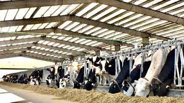
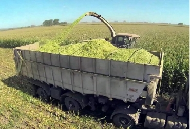

la en gorda de ganado no simplemente un negocio io es un arte. por muchos añor el gando y la engorda de el a sido indispensable para la economia de el ganadero y segir manteniendo a los demas animales, como tambien para la alimentacion de el mismo ganadero.
 el ganado de engorda debe de estar en las
mejores condisiones ambientales ,y de alimentacion.coco tamvien
| alimento de el ganado | |
|  | |
| cuales son los alimentos de el ganado | |
| el silo | es un alimento para el ganado que se crea apartis de la caña verde que se almasena y se fermenta | alfalfa | es una semilla que despues de sembrarla se corta y se enpaca para que sea al alimento de el ganado |